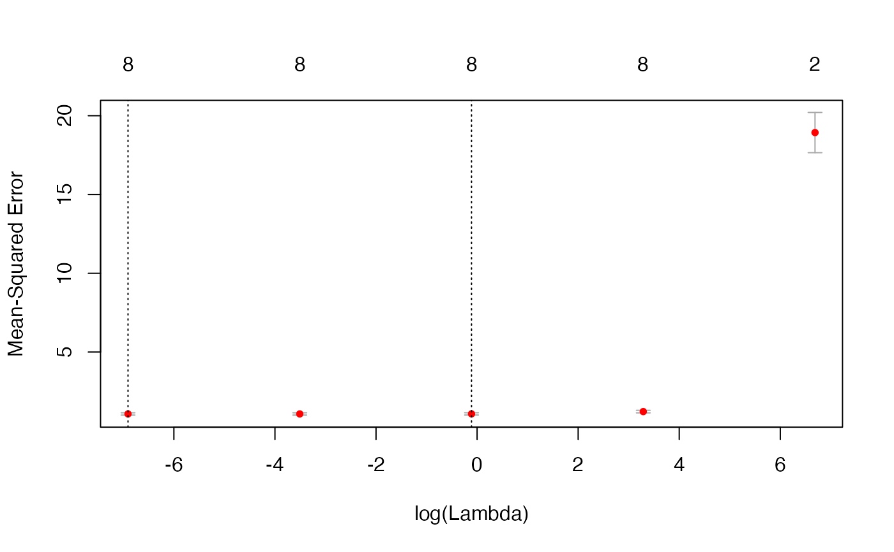

Evaluate a fitted penalty path using contiguous validation folds and return the full-data coefficients together with two penalty selectors.
Usage
cv.bridge(
X,
y,
q,
lambda,
nfolds = 10,
lambda.min = ifelse(n > p, 0.001, 0.05),
nlambda = 100,
eta = 1e-07,
converge = 10^10,
num_threads = 10
)Arguments
- X
Numeric design matrix with
nobservation rows andppredictor columns. Supply finite values and predictors with nonzero variation; omit an intercept column. A data frame is converted usingmodel.matrix(~0+., X); restrictions and future predictions must use the resulting predictor order.- y
Numeric response vector of length
n, containing finite values.- q
Bridge-penalty exponent, a finite number in
(0, 2]. Values 1 and 2 specify the L1 and L2 penalty forms. Estimation uses local quadratic approximation (LQA).- lambda
Optional nonempty numeric vector of finite, nonnegative penalty values. Its order is retained. When supplied, it determines the fitted path and overrides
nlambdaand the grid argumentlambda.min.- nfolds
Number of validation folds, an integer between 2 and
n. The default is10.- lambda.min
Positive absolute endpoint of the automatically generated penalty grid. The default is
0.001whenn > p, and0.05otherwise. This argument is a penalty value, not a ratio. In CV results, the field also namedlambda.mininstead denotes the selected penalty.- nlambda
Number of automatically generated penalty values, an integer of at least 2. The default is
100; ignored whenlambdais supplied.- eta
Positive numerical tolerance, with default
1e-7. Used for coefficient elimination and stopping on squared coefficient changes.- converge
Nonnegative initial convergence-distance value, retained for compatibility. The default is
1e10. Iteration stops when the updated squared coefficient change is at mosteta, or at the historical cap.- num_threads
Requested fold-level workers, a positive integer. The default is
10; the effective count is capped atnfolds. Builds without OpenMP execute folds sequentially. Userbridge_info()to inspect the compiled support.
Value
A list of class cv.bridge with components:
- cve
Numeric vector of validation mean squared errors, one per penalty. Squared holdout residuals are summed across folds and divided by the total observation count, so each observation has the same weight.
- cvse
Numeric vector from the historical CV error-bar calculation. It is not the conventional standard error of foldwise mean squared errors.
- cvup, cvlo
Upper and lower curves, computed as
cve + cvseandcve - cvse.- lambda
Numeric penalty vector in fitted order.
- nz
Number of nonzero slopes, excluding the intercept, in each full-data fit.
- betas
Full-data coefficient matrix with
p + 1rows andlength(lambda)columns. The first row is(Intercept); the remaining rows are original-scale slopes in predictor order.- lambda.min
Fitted penalty with the smallest
cve. Ties select the largest penalty among the minimizers. This selected value is distinct from the input argument specifying the generated grid endpoint.- lambda.1se
Largest fitted penalty whose
cveis no greater thancve + cvseevaluated at the selectedlambda.min. The name follows the historical convention; the threshold uses the package'scvsecalculation described above.
Details
Fold assignment follows the supplied row order. The nfolds
validation sets are contiguous blocks; their sizes can differ by one.
Centering and RMS scaling use all observations before fold allocation,
and each fold fit also reconstructs its training-set intercept.
These historical preprocessing and error-bar conventions are retained.
The reported validation error aggregates held-out predictions at each
fitted penalty, and coefficients in betas come from a final fit
to all observations.
For one fixed penalty, let be nfolds, the total
observation count, the validation indices in fold ,
and the held-out response residual for observation .
Equation (1) defines a fold's error contribution , the pooled
validation MSE, and the historical error-bar width:
The folds partition all observations, so the sum in Equation (1) weights
each held-out observation equally. The final quantity supplies the plotted
bar width and the historical lambda.1se threshold. Its centering
uses the pooled cve, not the average fold contribution, and it is
not a conventional foldwise standard error.
predict() defaults to the minimum-error penalty lambda.min.
coef() defaults to lambda.1se. Supply s explicitly
to use the same penalty for both operations.
Use plot() to inspect the curve, error bars and selected penalties.
Author
Bahadir Yuzbasi
Maintainer: Bahadir Yuzbasi b.yzb@hotmail.com
Examples
# Reproducible synthetic demonstration: 100 observations, eight predictors.
set.seed(2019)
beta <- c(3, 1.5, 0, 0, 2, 0, 0, 0)
p <- length(beta)
beta <- matrix(beta, nrow = p, ncol = 1)
n <- 100
X <- matrix(rnorm(n * p), nrow = n, ncol = p)
y <- as.numeric(X %*% beta + rnorm(n))
# Five penalties keep this help example fast; the default is 100.
# Three contiguous folds and one worker keep this demonstration small.
model1 <- cv.bridge(X, y, q = 1,
nlambda = 5, nfolds = 3, num_threads = 1)
model2 <- cv.bridge(X, y, q = 2,
nlambda = 5, nfolds = 3, num_threads = 1)
# Inspect both selectors and explicitly choose the minimum-error fit.
c(minimum_error = model1$lambda.min, historical_1se = model1$lambda.1se)
#> minimum_error historical_1se
#> 0.0010000 0.8956281
coef(model1, s = "lambda.min")
#> 0.001
#> (Intercept) 0.02436200
#> V1 2.97264933
#> V2 1.57302384
#> V3 0.07468856
#> V4 -0.08748886
#> V5 1.98528242
#> V6 -0.09864804
#> V7 0.07149838
#> V8 -0.02593340
predict(model1, newx = X[1:5, , drop = FALSE], s = "lambda.min")
#> [1] -1.4546979 0.3068586 -1.5652478 2.6580196 -10.4100022
plot(model1)
